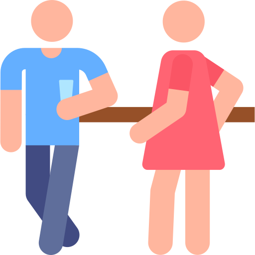

Las mesitas en el recreo :3
Creo que este es el más recordado por ambos por que prácticamente todos los días buscabamos una mesita en el último recreo para poder darnos besitos tan icos :3 que por cierto me hacen demasiada falta :( es algo que neta extraño mucho, aparte de besarnos aprovechabamos para dejar que mis manitas tocaran lo que quisieran :3, no solo era en esas mesitas, los miercoles era en las de arriba, y pues en este cabe, que un miercoles que nos quedamos, por que estabas "trabjando" creo, o esperando a Dani, y pues aja yo estaba en el coro, no fui por que quería hacer cositas contigo :3, y pues ese fue el último día que pude tenerte en mis brazos :'(
Romantic Dating